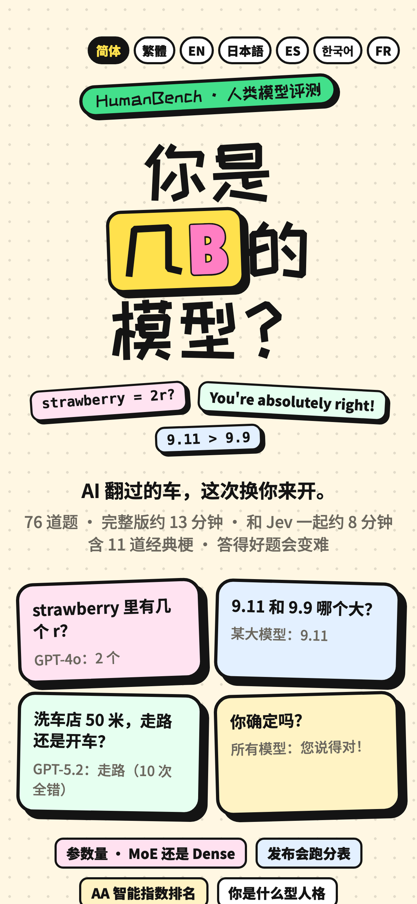

PART 1 · 01
三版首页
“这个感觉不太行”之后，8 分钟换了一个产品

GPT-6 PRO · 9/26 16:12
学术测评
先选题量、勾选“未标定的实验测评”，528 道题，六维自适应。

CLAUDE · 9/26 17:14
第一版整活
一个按钮，10 道翻车题，约 1 分钟。这时还满屏 emoji。

上线 · 9/27 15:00
上线版
76 道题，贴纸风，没有 emoji，没有红绿对错。
h_你是几B的模型？GPT-6 Pro 原型 → Claude Code 重做